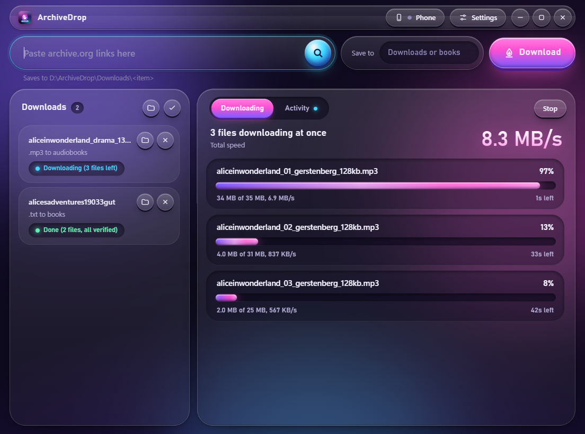
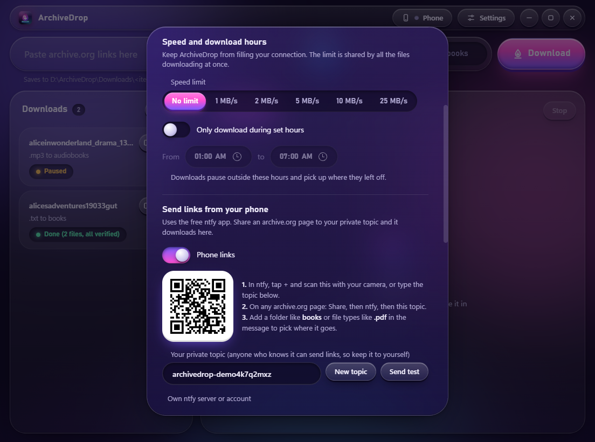
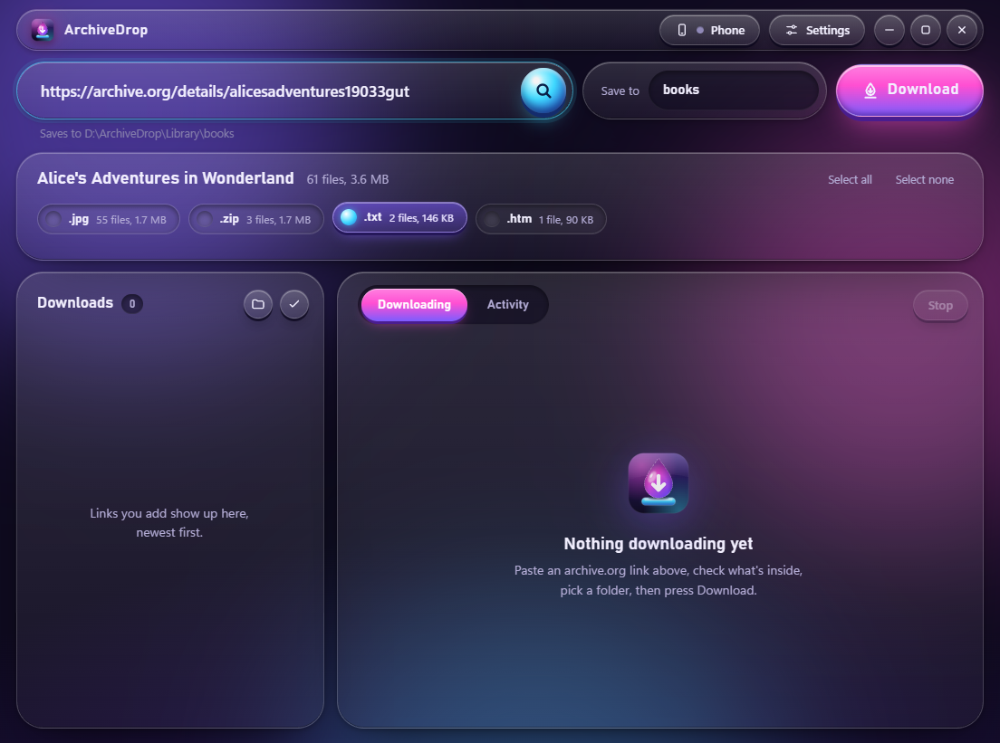

Why not just use the download links on archive.org?
They're fine for a file or two. Bigger jobs get awkward.
One click per file, or one big zip
On an item page you either click files one at a time or download a whole format as a single zip. ArchiveDrop fetches the actual files, several at once, and picks up where it stopped if the connection drops.
Torrents can fall behind
An item's torrent can go out of date when files are added or changed later, so some never arrive. ArchiveDrop works from the item's current file list and checks every file against its MD5.
The bulk tools need a terminal
The official ia tool and wget handle big downloads well if you're happy typing commands. ArchiveDrop uses the same internetarchive library behind a normal window.
Good for a full audiobook or radio series, a shelf of scanned manuals or magazines, an old software collection, or a set of public-domain films.
One window for the whole job
Check an item, choose the file types and a folder, then watch several files download at once with their own progress bars. Interrupted downloads pick up where they stopped, and files you already have are skipped.

- 1 to 6 files at the same time
- Paste a whole list of links at once
- Every file checked against the archive's MD5
- Skips thumbnails and archive metadata
- Background check every 15 minutes
- Speed limit and overnight-only hours
Send links from your phone
Share any archive.org page to your private ntfy topic and it starts downloading on your PC. ArchiveDrop tells you when it's added and when it's done.
Scan once, share forever
Turn on phone links and scan the code with the free ntfy app. After that it's Share, then ntfy, from any browser.

Pick the folder from the message
Add a folder name like books or file types like .pdf in the message, or send them right after the link. If the download already started, its files move there when it finishes.

Install in a minute
- Download ArchiveDrop-Setup.exe from the button above or the releases page.
- Run it. If Windows shows "Windows protected your PC", choose More info, then Run anyway. The installer isn't code-signed yet. Prefer no installer? Get the portable zip.
- Paste a link into the bar and press Download. To update later, run the newer installer over the top.